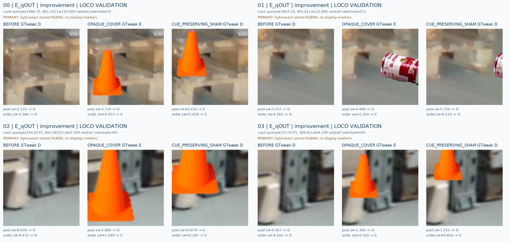
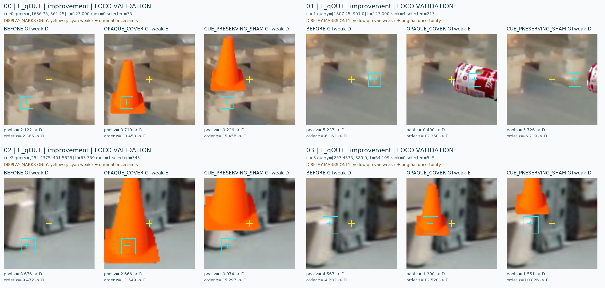
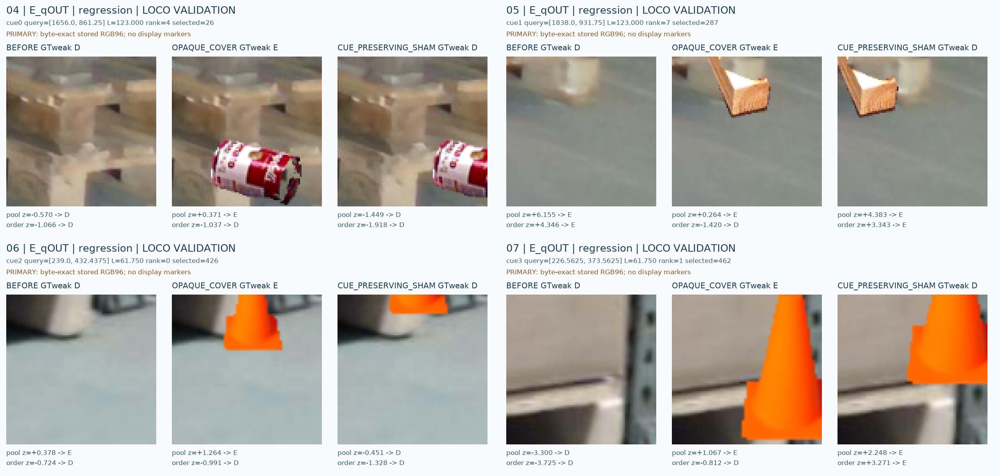
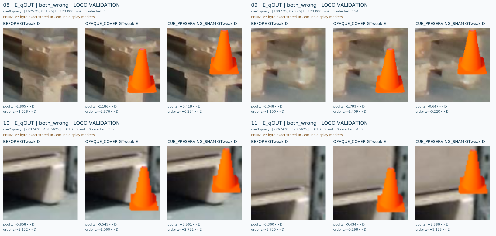
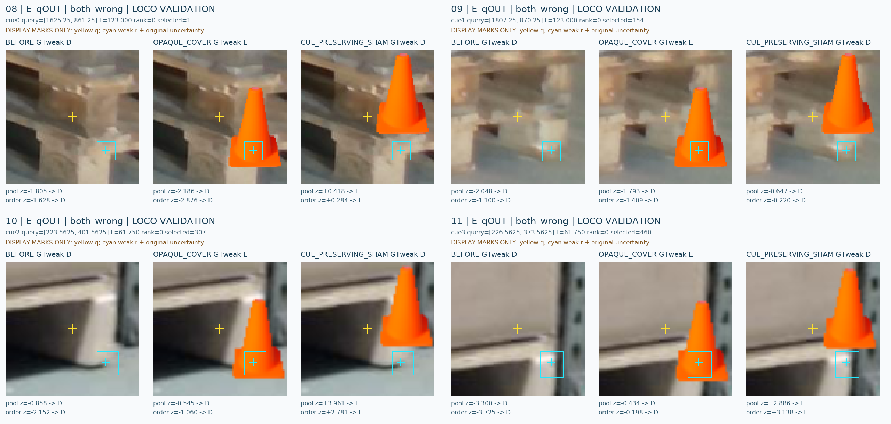
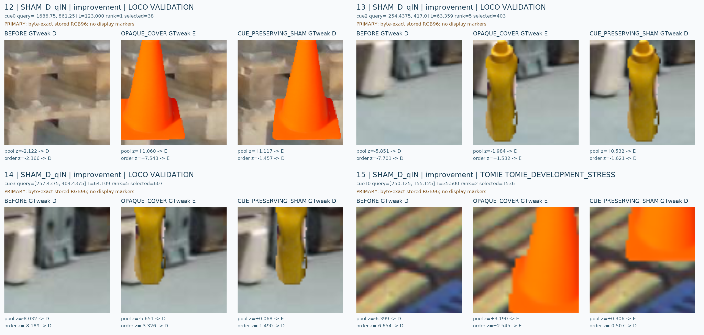
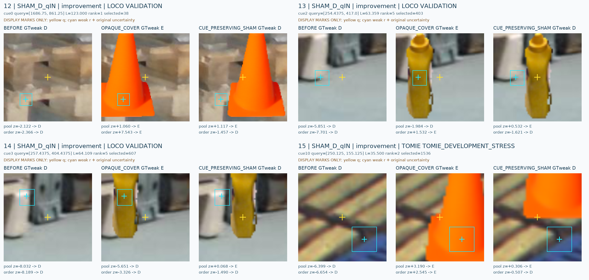
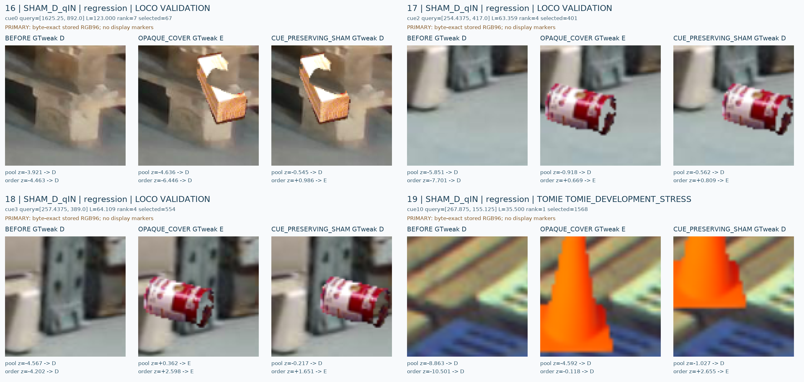
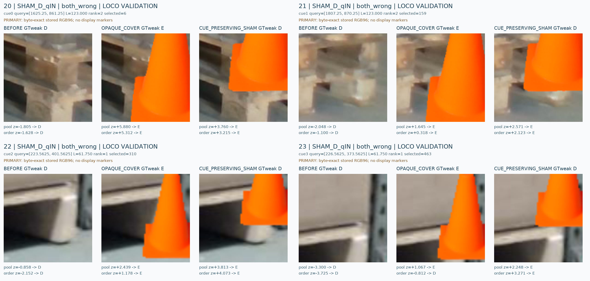
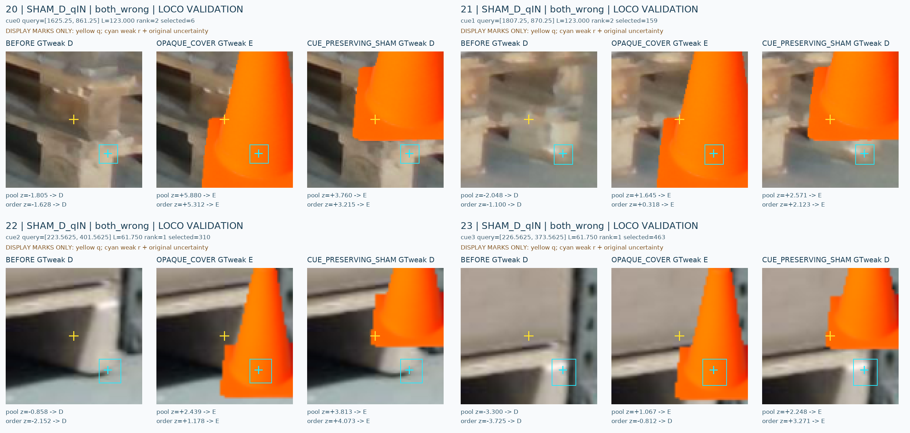

C19 공개 VAL 저장 사례: pooled ↔ ordered
고정1000 update 두 arm. 원 VAL만 사례 선택, TRAIN은 별도 전체 분모에만 포함. 서로 다른 cue를 우선한 occurrence 순서 선택이며 독립 장면 표본이나 accuracy 추정용 gallery가 아닙니다. AI-weak cue 가시성·native UNKNOWN·human gold false. current/V112/새 model call 없음.
선택·전체 fold 분모·logit manifest
E_qOUT: improvement (4)

q / weak r / original uncertainty display

E_qOUT: regression (4)

q / weak r / original uncertainty display
E_qOUT: both_wrong (4)

q / weak r / original uncertainty display

SHAM_D_qIN: improvement (4)

q / weak r / original uncertainty display

SHAM_D_qIN: regression (4)

q / weak r / original uncertainty display
SHAM_D_qIN: both_wrong (4)

q / weak r / original uncertainty display
